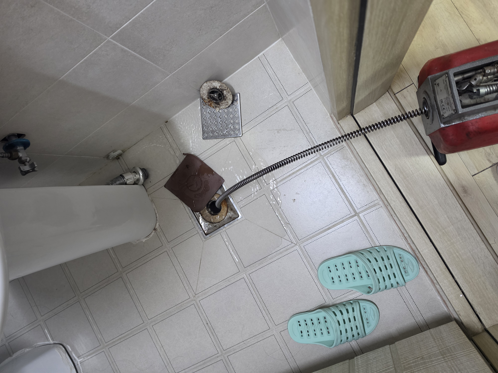
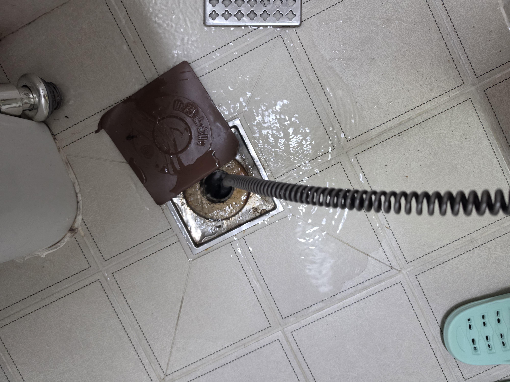
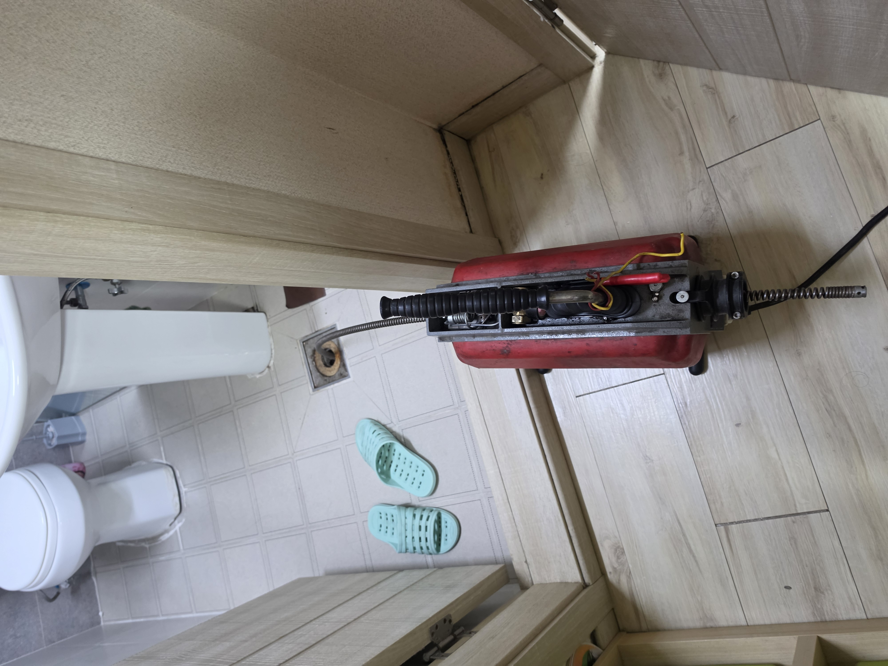
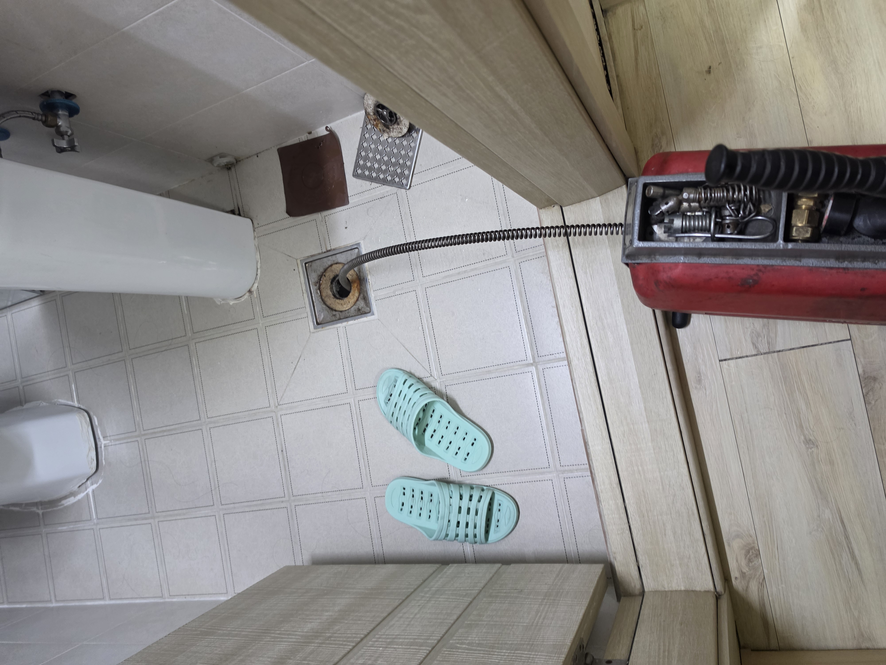

김포 하수구막힘,
원인 확인부터 해결까지
욕실 하수구·배수구, 변기, 싱크대 막힘부터 배관 고압세척, 누수탐지와 수도·배관공사까지. 현재 증상과 현장 상황을 확인해 필요한 작업 방법을 안내합니다.
동·읍·면 지역 문의
하수구·변기·싱크대
고압세척·배관공사
누수탐지 상담
김포 하수구막힘, 증상과 원인부터 확인합니다.
김포 하수구막힘은 욕실, 화장실, 베란다, 세탁실, 싱크대, 등 발생 위치와 증상에 따라 원인이 다를 수 있습니다. 물이 천천히 내려가거나 역류·악취가 발생하면 현장 상태를 확인해 필요한 작업 방법을 안내 합니다.
김포 하수구막힘
욕실, 화장실, 베란다, 세탁실 등의 느린 배수·역류·악취 등 하수구 막힘 증상을 확인합니다.
김포 변기막힘
휴지나 이물질, 배관 내부 막힘 등 증상과 상황을 확인해 필요한 관통 및 배관 점검을 진행합니다.
김포 싱크대막힘
기름때와 음식물 찌꺼기 등으로 배수가 느려지거나 역류하는 주방 배관 상태를 확인합니다.
김포 배수구막힘
욕실·세탁실·베란다 등 바닥 배수구가 막히거나 물이 잘 내려가지 않는 원인을 확인합니다.
배관 고압세척
반복되는 막힘이나 배관 내부에 슬러지와 이물질이 쌓인 경우 고압세척 필요 여부를 확인합니다.
김포 누수탐지
수도 사용량 증가, 바닥이나 벽의 습기 등 누수가 의심되는 증상을 확인하고 누수 위치 탐지를 상담합니다.
수도·배관공사
수도배관과 각종 배관의 설치·보수 등 현장 상황에 맞는 배관공사를 상담합니다.
배관 보수·교체
노후·파손 등으로 보수가 필요한 배관은 상태를 확인한 뒤 보수 또는 교체 범위를 안내합니다.
이런 증상이 있다면 전화로 먼저 말씀해 주세요
작업 상담 및 진행 과정
전화상담
어디에서 어떤 문제가 발생했는지 먼저 말씀해 주세요.
현장 상태 확인
막힘·누수 위치와 배관 상태를 확인합니다.
작업 방법 안내
필요한 장비와 작업 범위를 현장 상태에 맞게 안내합니다.
작업 후 확인
막힘 작업은 배수 상태 등을 다시 확인합니다.
김포 하수구·배관 출장 상담 지역
김포 지역의 하수구막힘, 변기막힘, 싱크대막힘, 누수탐지 및 배관공사 문의를 상담합니다.
김포 월곶면 군하리 싱크대 역류·배관 막힘 작업
김포시 월곶면 군하리 스타빌에서 진행한 실제 배관 막힘 작업입니다. 윗집에서 물을 사용하면 아래 세대 싱크대 쪽으로 물이 역류하는 증상이 발생했습니다. 이 건물은 싱크대와 안방 화장실 배관이 연결된 구조로, 배관 구조와 작업 위치를 확인한 뒤 안방 화장실 배수구에서 스프링 장비를 투입해 막힌 배관 구간을 뚫는 작업을 진행했습니다.




해당 건물은 배관 막힘이 반복적으로 발생해 이전 작업 경험을 바탕으로 역류 증상과 배관 연결 구조에 맞는 작업 위치를 확인해 진행하고 있습니다.
문제 증상을 먼저 알려주시면 상담이 빠릅니다
막힘 위치, 언제부터 발생했는지, 물이 내려가는지 또는 역류하는지, 누수가 의심되는 위치 등을 말씀해 주시면 현장 상담에 도움이 됩니다.
전화 전 많이 물어보는 내용
완전히 막히기 전에도 배수가 느려질 수 있습니다. 물 빠짐이 예전보다 눈에 띄게 느려졌다면 증상을 말씀해 주세요.
네. 하수구뿐 아니라 변기막힘, 싱크대막힘, 각종 배수구막힘을 상담합니다.
누수가 의심되는 증상과 수도·배관 보수 및 공사 내용도 상담합니다. 현장 상황에 따라 필요한 작업을 확인합니다.
지금 배관 문제가 있으신가요?
막힌 위치나 누수 증상을 전화로 말씀해 주세요.
필요한 작업 가능 여부를 상담해 드립니다.